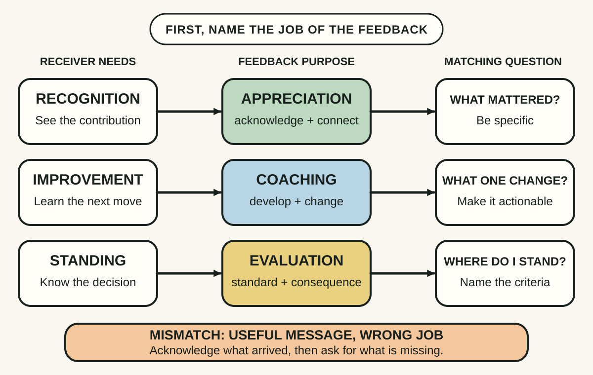
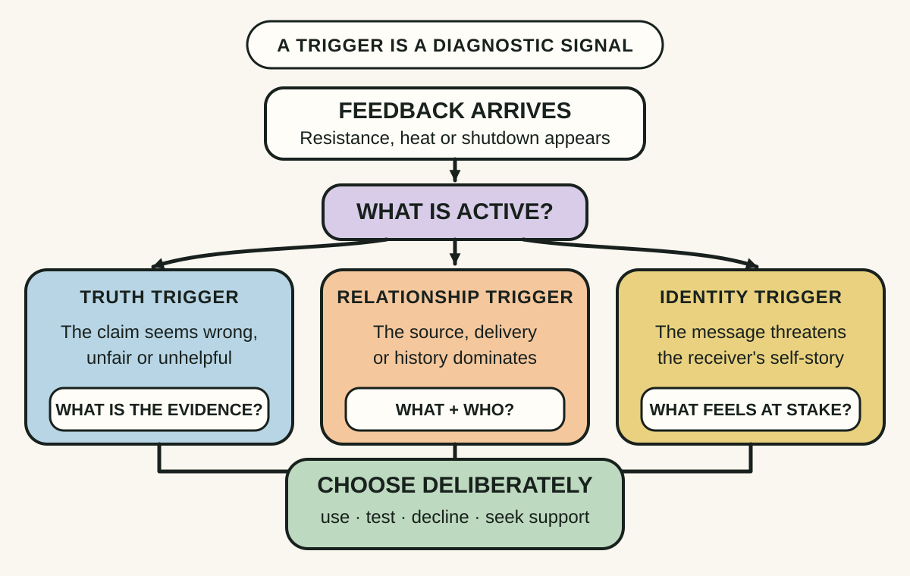
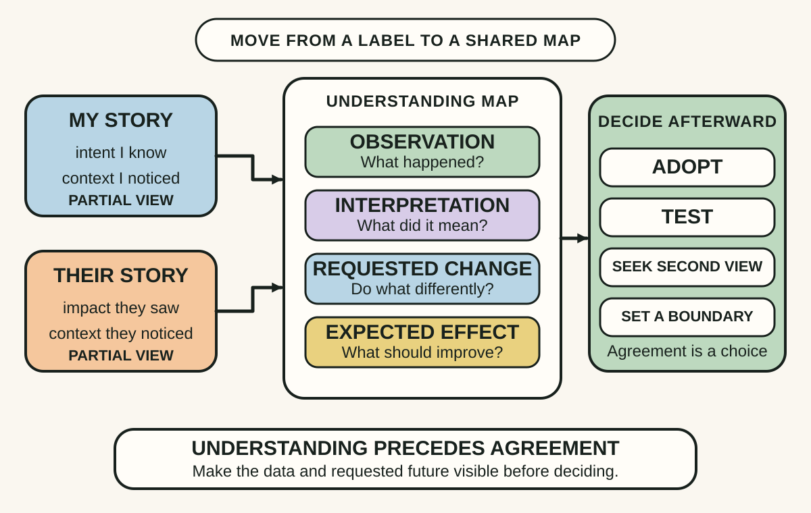

Daily lesson ·
Thanks for the Feedback
Receive feedback as a decision process: identify the kind of help needed, diagnose what is making the message hard to hear and turn broad judgments into observable information before choosing what to use.
Idea 1
Name the job of the feedback #
The idea
Stone and Heen argue that the single word feedback hides three different purposes. Appreciation recognises effort or contribution and helps people feel seen. Coaching supports learning or change. Evaluation says where someone stands against a standard and often carries a decision or consequence.
Confusion follows when the receiver needs one purpose and hears another. Praise does not answer a request for improvement, coaching can feel like a verdict when evaluation is unresolved, and a rating can drown out useful advice. Receiving well starts by identifying which job the message is trying to do and which job is actually needed.

Why it matters
Career conversations often fail while both people believe they gave or received feedback. Separating the purposes makes a vague exchange diagnosable, lets appreciation remain genuine and gives coaching or evaluation enough space to be understood on its own terms.
Apply it today
Choose one upcoming one-to-one or review and write the feedback purpose you need most from it.
Prepare one matching request: what contribution should be recognised, what one change would help, or what standard and decision determine where you stand.
If another purpose appears first, acknowledge it before asking for the missing information.
Caveat or failure mode
The three purposes can overlap, and forcing every sentence into one box can make a natural conversation mechanical. Formal evaluation may also require documented criteria, procedural fairness and a clear decision, not merely better wording. Appreciation should not be used to soften or conceal consequences that the receiver needs to understand.
Idea 2
Diagnose the trigger #
The idea
Stone and Heen group common feedback reactions into three triggers. A truth trigger says the content seems wrong, unfair or unhelpful. A relationship trigger centres on who delivered it and the history between the people. An identity trigger makes the message feel like a threat to the receiver's sense of competence, goodness or stability.
Naming the trigger creates a pause for diagnosis. The receiver can examine the claim, separate the message from the messenger where possible and steady an identity reaction before deciding. The point is not to suppress emotion or accept the feedback; it is to stop three different problems collapsing into one automatic rejection or surrender.

Why it matters
Without a diagnosis, a valid concern can be lost because its source is difficult, or a damaging message can be accepted because the receiver mistakes distress for proof. Distinguishing content, relationship and identity makes the next question more precise and preserves the right to decide.
Apply it today
Recall one piece of feedback that still creates heat and label the strongest trigger: truth, relationship or identity.
Write one question matched to it: ask for evidence, name the relationship concern or describe the self-story that is being threatened.
Choose a next step that remains available after the pause: use it, test it, decline it or involve a trusted support person.
Caveat or failure mode
Some feedback is discriminatory, coercive, abusive or tied to an unsafe power imbalance. A trigger is not proof that the receiver is the problem, and separating the message from the messenger is not always wise. Document serious concerns and use appropriate support or formal channels rather than treating every harmful interaction as a personal learning exercise.
Idea 3
Understand before you decide #
The idea
Stone and Heen show how feedback often arrives as a label or conclusion while the observations and intended change remain hidden. The giver knows the incidents they noticed and the rule they used to interpret them; the receiver knows different incidents and their own intentions. Both can therefore feel certain while telling different stories.
They advise understanding the feedback before accepting or rejecting it. Ask where it is coming from: what was observed and how was that interpreted? Then ask where it is going: what should happen differently and what result is expected? Difference spotting replaces a quick right-versus-wrong contest with a map of the information and assumptions each person holds.

Why it matters
A label such as not strategic or poor communicator is easy to defend against and hard to act on. A concrete observation and requested future behaviour can reveal a real blind spot, an assumption worth testing or a disagreement that needs an explicit decision rather than a personality verdict.
Apply it today
Choose one broad piece of feedback and ask what specific event or behaviour the giver observed.
Ask what they inferred from it, what they would have preferred you to do and what effect they expect that change to produce.
Write the smallest safe test that could generate new evidence, or state the boundary that explains why you will not act on it.
Caveat or failure mode
Understanding does not require agreement. One person's observations can be incomplete, standards can be inconsistent and repeated labels can reflect shared bias rather than independent truth. For consequential evaluation, compare examples across time and sources, make criteria explicit and keep decisions open to correction.
Knowledge check · 6 questions
Learning check
Answer all 6, then check your answers. Your first result stays in this browser, and each explanation appears after you check. A 3-question review can appear on the homepage from tomorrow.
6 questions not yet answered.
Today's experiment · 8 minutes
Ask for one useful thing
- Choose one recent meeting, decision or written update where another person's perspective could help you improve.
- Ask one specific coaching question: What is one thing I could change next time that would make this work better for you?
- Classify the response as appreciation, coaching or evaluation and notice whether a truth, relationship or identity trigger appears.
- Ask for the observed example and the future behaviour they would prefer, then write one small action you will test or one boundary you need to explain.
Observable result: You finish with one feedback statement linked to a specific observation and future action, plus a conscious decision to test, use or decline it.
Retrieval practice
Spaced recall
- From Working Identity: why can a small real-world experiment teach more about a possible career self than extended private reflection?
- From The Mythical Man-Month: what cost appears before a new contributor can change the critical path of tightly coupled work?
- From The Art of Gathering: how does a specific purpose help a host decide what belongs in a gathering?
Verification
Source notes
These links support the attributed claims and edition details; applications and extensions are labelled in the lesson.
- Penguin Random House: book description, authors and edition details
- Harvard Business Review: Find the Coaching in Criticism, adapted from the book
- Stone and Heen: feedback conversation learning resources
- Harvard Law School: Sheila Heen on wrong spotting and finding what may be right
- Psychological Bulletin: meta-analysis of feedback interventions
One-sentence takeaway